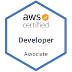
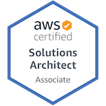

Getting to know me
I am a result-driven IT professional with extensive experience in the engineering, administration and support of information systems.
With in-depth expertise in the design, implementation, analysis, optimization, troubleshooting and documentation of IT infrastructure, LAN/WAN and wireless networks, Linux and windows administration, cloud solutions development. Strong “hands on” technical knowledge of network, systems infrastructure architecture designs and implementation with the ability to adopt new IT technology and systems required.



Career Highlight
DevOps
Leverage on automation tools and code versioning, employing microservice orchestration to enhance application deployment through properly managed CI/CD process. Implementing deployments on Cloud and on-prem with virtualization technology, providing load balancing and ssl offload for web traffic security and managinging, visualizing log analysis from various deployments.
Network Administration
Designing and implementing Network architecture using industry standard network design process. Implement required network security solutions for communication accross multiple locations, automating config backups, device integration and remote connections Expertise in routing and switching, network troubleshooting, TCP/IP protocol, network system analysis, change management, IPv4/IPv6 addressing.
Systems Administration
Managed servers, end user hardware and existing network applications. Conducting daily IT infrastructure health checks, diagnosing and resolving technical issues related to hardware and software. Supported all LAN, WAN and other networking systems. Designed IT infrastructure solutions, storage, backups, high-availability, disaster recovery, ensuring security and integrity of systems and network.
Hybrid IT Infrastructure
Interpreting technical requirements for software design projects into infrastructure designs to support complex business problems. Leveraging infrastructure provided by cloud provides and integrating various environments for development, staging and live environments for full CI/CD process.
Cloud services
- GCP Architect
- Azure Administrator
- Azure Solutions Architect
- AWS Solutions Architect
- AWS Developer Associate
- Architecting with Google Compute Engine Specialization, Coursera
SysAdmin
- Comptia Linux +
- Windows Server Administration
- Redhat/Centos/Ubuntu
Networking
- Cisco Certified Specialist
- Cisco Certified Proffessional
- Enterprise Advanced Infrastructure Implementation
- Enterprise Design
- Enterprise Core
Microservice
- Docker/Docker Swarm
- Podman,Buildah
- Kubernetes-GKE,AKS,Amazon EKS
- Openshift Administration
- DevOps-CI/CD
Automation
- Ansible, Puppet
- Terraforming infrastructure
- Microsoft TFS/Devops
- Github/Gitlab/Jenkins
Virtualization
- VMware
- DataCenter Virtualization
- Network Virtualization - NSX
- Redhat/Ovirt Virtualization - KVM
- Windows Hyper-V